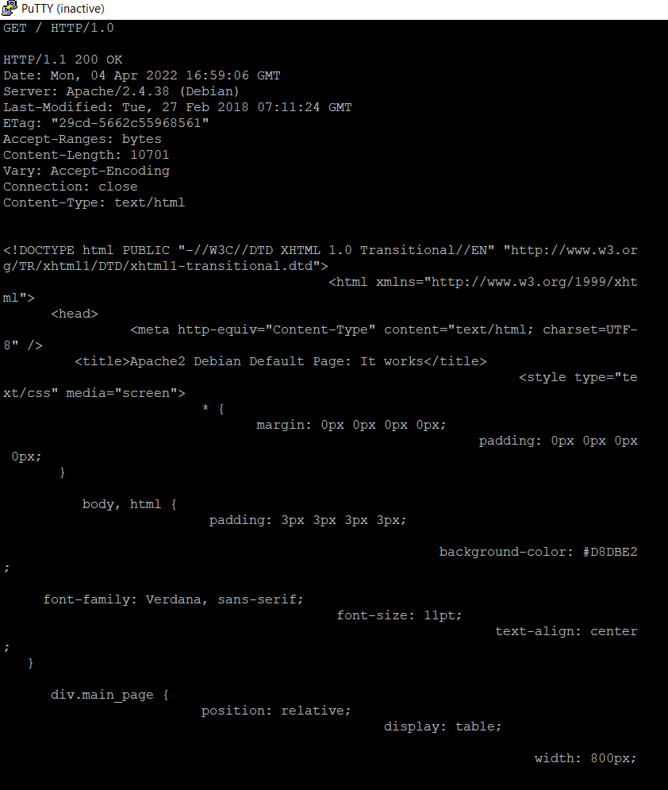
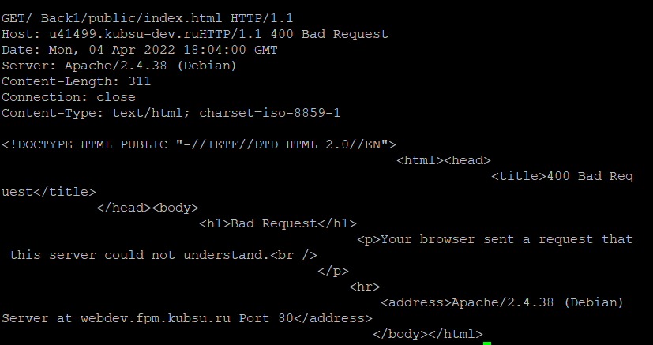
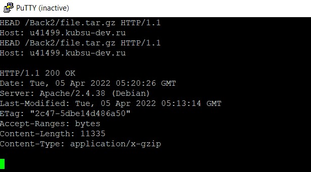
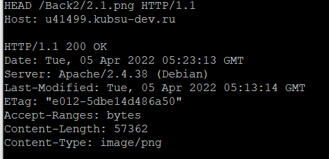
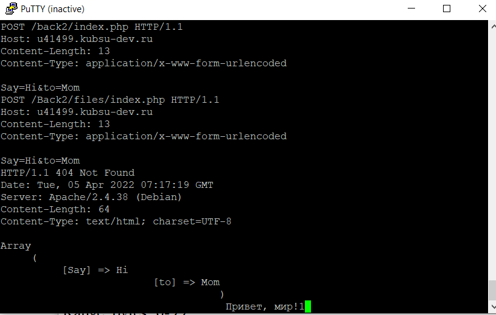
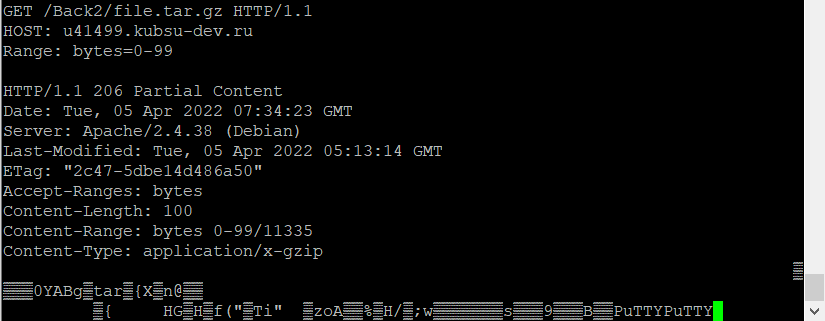
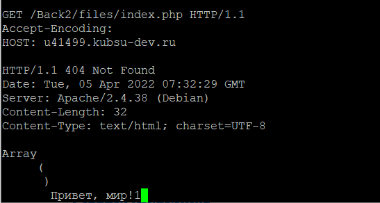

- 1) получить главную страницу методом GET в протоколе HTTP 1.0;

- 2) получить внутреннюю страницу методом GET в протоколе HTTP 1.1

- 3)определить размер файла file.tar.gz, не скачивая его;

- 4) определить медиатип ресурса /image.png

- 5) отправить комментарий на сервер по адресу /index.php

- 6) получить первые 100 байт файла /file.tar.gz

- 7) определить кодировку ресурса /index.php
